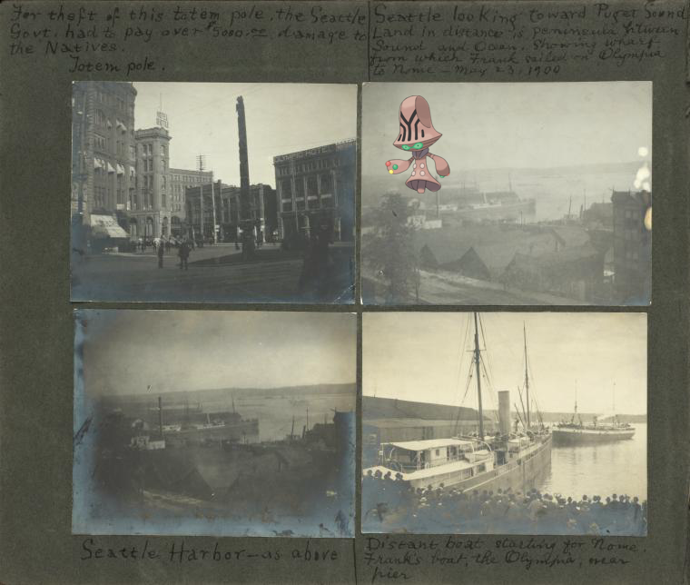

Pokémon in the NYPL archives
2018-9-27 00:10:03

Beheeyem @
Frank E. Downs. Trip to Nome, Alaska, May to Sept. 1900: For theft of this totem pole the Seattle govt. had to pay over $5000.00 damage to the Natives, totem pole; Seattle looking toward Puget Sound. Land in distance is peninsula between sound and ocean, showing wharf from which Frank sailed on Olympia to Nome - May 23, 1900; Seattle Harbor, as above; Distant boat starting for Nome. Frank's boat, the Olympia, near pier.
.